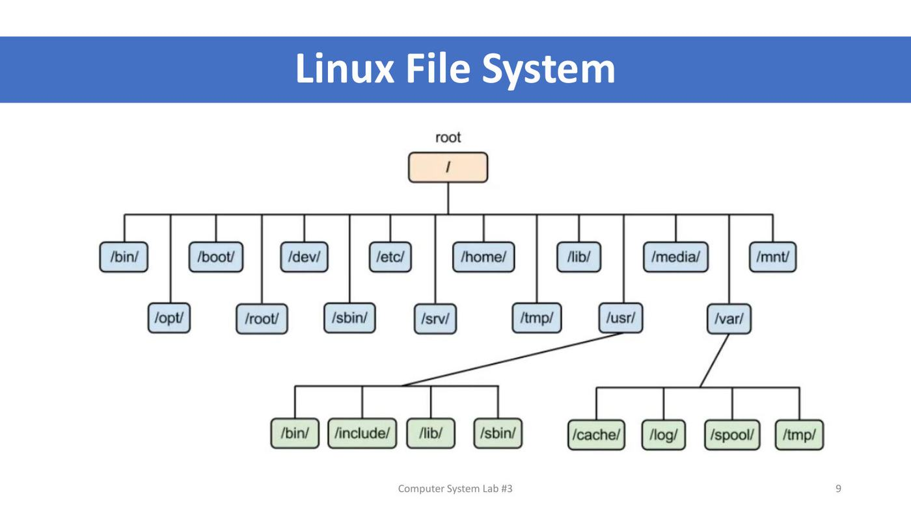
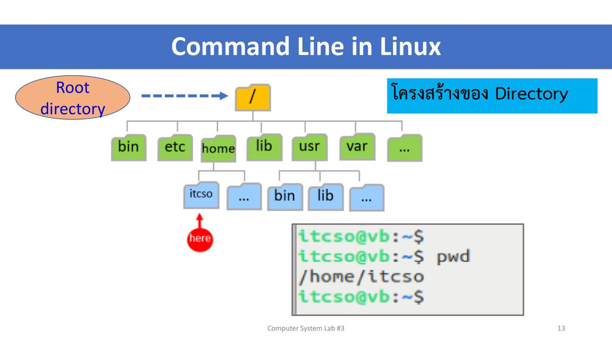
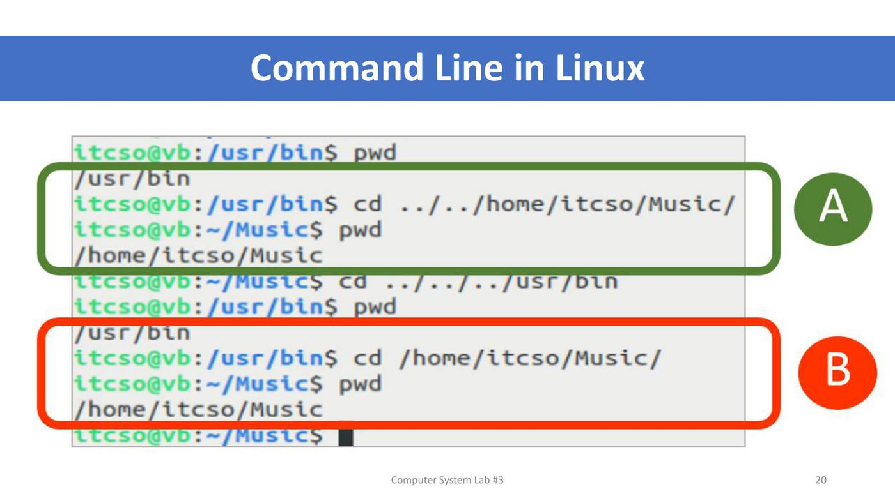
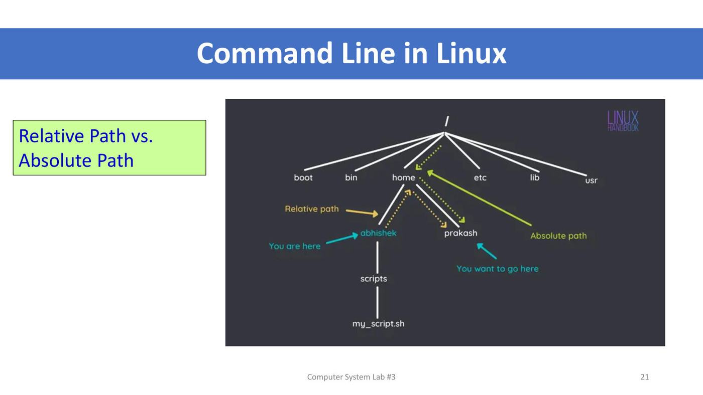

ภาพรวมบทนี้ ต่อจาก L2 ที่รู้จักคำสั่งพื้นฐานแล้ว บทนี้ลงลึกเรื่อง ระบบไฟล์ (file system)
(1) Lecture 3 นิยามของ file system, ประเภทของ file system (FAT/FAT32/NTFS ของ Windows, Ext2/3/4 ของ Linux, HFS ของ macOS) และทบทวนโครงสร้างไฟล์ของ Windows กับ Linux
(2) Lab 3 ฝึกคำสั่งไฟล์บน Windows (
dir,dir /p,cd) และบน Linux เน้น การเดินใน directory แบบ relative path vs absolute path และคำสั่งจัดการไฟล์ครบชุด:cat,more,head,tail,file,touch,echo >,nano,cp,mv,rm,grepพร้อม wildcard*และ?
ส่วนที่ 1 — Lecture 3: File Management
1. ข้อมูลรายวิชา (ย่อ)
- สัปดาห์ที่ 3 = การฝึกการจัดการแฟ้มข้อมูล (18 August 2026)
- เกณฑ์คะแนนเหมือนเดิม · ส่งแลป 23.59 น. ของวันอังคาร/วันที่เรียน · ทดสอบย่อยทุกสัปดาห์ก่อนจบคาบ
2. File System คืออะไร ⭐
ระบบแฟ้มข้อมูล หรือระบบไฟล์ (File System) = เทคนิคในการจัดเก็บข้อมูลให้เป็นระเบียบ อ่านได้ง่ายและสะดวกโดยมนุษย์
- หน่วยพื้นฐานของระบบไฟล์ เรียกว่า "ไฟล์"
- ระบบไฟล์ใช้จัดเก็บไฟล์ในอุปกรณ์จัดเก็บข้อมูลส่วนใหญ่ เช่น hard disk, CD, USB drive
- ระบบไฟล์ช่วยให้อุปกรณ์รักษาตำแหน่งทางกายภาพของไฟล์ (รู้ว่าไฟล์อยู่ตรงไหนของดิสก์)
- ระบบไฟล์อนุญาตให้เข้าถึงไฟล์จากเครือข่ายได้
💡 (อธิบายเพิ่ม) เปรียบเทียบห้องสมุด: ดิสก์คือชั้นหนังสือ ไฟล์คือหนังสือ ส่วน file system คือระบบบัตรรายการที่บอกว่าหนังสือเล่มไหนอยู่ชั้นไหน ถ้าไม่มี ข้อมูลก็ยังอยู่บนดิสก์ แต่หาไม่เจอ
3. ประเภทของ File System ⭐⭐
| ระบบปฏิบัติการ | File system | ชื่อเต็ม |
|---|---|---|
| Microsoft Windows | FAT, FAT32 | File Allocation Table / File Allocation Table 32-bit version |
| NTFS | New Technology File System | |
| Linux | Ext → Ext2, Ext3, Ext4 | Extended file system (ปรับปรุงแล้วเติมเลขต่อท้าย) |
| macOS | HFS | Hierarchical File System |
💡 (อธิบายเพิ่ม) FAT32 เก่าแต่เข้ากันได้กับแทบทุกอุปกรณ์ (มักใช้กับ USB drive) แต่เก็บไฟล์ใหญ่เกิน 4 GB ไม่ได้ · NTFS เป็นมาตรฐานของ Windows ปัจจุบัน รองรับสิทธิ์ไฟล์และไฟล์ใหญ่ · Ext4 เป็นค่าเริ่มต้นของ Ubuntu ที่เราติดตั้งใน L1 (macOS รุ่นใหม่ใช้ APFS แทน HFS แล้ว)
4. Windows File System
- ⭐ Directory = Folder (คำเดียวกัน Windows นิยมเรียก folder, Linux นิยมเรียก directory)
- ตัวอย่างบน Desktop: ไอคอน Word = ไฟล์ (a word file) · ไอคอนแฟ้มเหลือง = folder/directory
- โครงสร้างเริ่มที่
C:\→Program Files(Common Files, Microsoft Office, Microsoft.NET),Windows(system32, assembly, Web),temp - ดูใน Command Prompt ด้วย
cd \แล้วdir
5. Linux File System และ Linux vs Windows

- เริ่มที่ root
/แตกเป็น/bin/ /boot/ /dev/ /etc/ /home/ /lib/ /media/ /mnt/ /opt/ /root/ /sbin/ /srv/ /tmp/ /usr/ /var/·/usr/มี bin, include, lib, sbin ·/var/มี cache, log, spool, tmp - ผล
lsและls -l | moreที่/เหมือน L2 (ทุก directory เป็นของ root root, มี symbolic linkinitrd.img ->) - Linux vs Windows: Linux แยกไฟล์ตามชนิด (
/usr/bin/Firefox.sh,/usr/lib/Firefox/plugin-container,/usr/share/icons/Firefox.png) · Windows แยกตามโปรแกรม (C:\Program files\Firefox\Firefox.exe, plugin-container, mozicon)
หน้าที่ของแต่ละ directory และการเปรียบเทียบแบบละเอียด ดู สรุป L2 หัวข้อ 7–8
ส่วนที่ 2 — Lab 3: File System Commands
6. วัตถุประสงค์และสิ่งที่ส่ง
Objectives: 1. Study Windows file systems · 2. Study Linux file systems · 3. File system commands of Windows · 4. File system commands of Linux
What to Submit: แคปหน้าจอทุกคำสั่ง พร้อมเขียนอธิบายผลของแต่ละคำสั่ง รวม PDF ไฟล์เดียว ส่ง MyCourses ชื่อ 6887xxx_lab3.pdf · ⚠️ ส่งวันนี้ (August 18) ก่อนเที่ยงคืน
7. คำสั่ง Windows
คำสั่ง Windows ที่ใช้ในแลป พร้อมคำสั่ง Linux ที่ทำงานเหมือนกัน (คอลัมน์ Linux อธิบายเพิ่ม):
| Windows | ทำอะไร (จากสไลด์) | Linux ที่เทียบได้ |
|---|---|---|
dir |
list directory/file | ls |
cd |
change directory | cd |
mkdir |
make directory | mkdir |
rmdir |
remove directory | rmdir |
echo |
แสดงข้อความ | echo |
del |
delete file | rm |
copy |
copy file to another file | cp |
ren |
rename a file | mv |
type |
see contents of a file | cat |
exit |
ออกจาก Command Prompt | exit |
เฉลยช่องว่างฝั่ง Windows
คำถามบางข้อให้ตอบ "จากเครื่องของตนเอง" ด้านล่างใช้ตัวเลขจาก screenshot ในสไลด์เป็นตัวอย่าง ตอนส่งแลปให้ใช้ของเครื่องตัวเอง
หน้า 6 — ผล dir ใน C:\Users\Sudsanguan (บรรทัดท้าย: 3 File(s) 728,356 bytes · 27 Dir(s) 264,628,350,976 bytes free)
| คำถาม | คำตอบ (จากตัวอย่าง) |
|---|---|
| จำนวนไฟล์ | 3 ไฟล์ |
| มีไฟล์ชื่ออะไรบ้าง | .condarc, .packettracer, MUDigitalID_sudsanguan_nga.zip (บรรทัดที่ไม่มี <DIR>) |
| แต่ละไฟล์ขนาดเท่าไหร่ | .condarc = 43 bytes, .packettracer = 186 bytes, .zip = 728,127 bytes (รวม 728,356 bytes) |
| จำนวน directory | 27 (บรรทัดที่มี <DIR> รวม . และ ..) |
💡 วิธีอ่าน: บรรทัดที่มี
<DIR>= directory · บรรทัดที่มีตัวเลขขนาดแทน = ไฟล์ · สรุปจำนวนดูได้จาก 2 บรรทัดสุดท้าย
หน้า 7 — ผลที่หยุดทีละหน้า (หัวหน้าต่าง "Command Prompt - dir /p", ท้ายจอขึ้น Press any key to continue . . .)
- คำสั่งที่ใช้:
dir /p(/p= pause ทีละหน้าจอ) - ต้องการดูหน้าถัดไป: กดปุ่มใดก็ได้ (press any key)
หน้า 8 — cd Desktop (prompt เปลี่ยนจาก C:\Users\Sudsanguan> เป็น C:\Users\Sudsanguan\Desktop>)
- คำสั่ง cd คือ การเปลี่ยน directory (change directory)
- Desktop คือ directory (folder) ย่อยใน home ของผู้ใช้ ที่เก็บไฟล์ที่เห็นบนหน้าจอ Desktop
หน้า 9 — cd / (prompt เปลี่ยนเป็น C:\> แล้ว dir แสดง Dell, Intel, Program Files, Users, Windows, xampp ฯลฯ)
- คำสั่ง cd / คือ การย้ายไป root directory ของไดรฟ์ (ใน Windows มาตรฐานคือ
cd \แต่cd /ก็ใช้ได้) - C:\ คือ root directory ของไดรฟ์ C — prompt
C:\>เรียกว่า C Prompt
8. คำสั่ง Linux: pwd / ls และโครงสร้าง directory
คำสั่ง Linux ที่ใช้ในแลป: pwd, ls, cd, mkdir, rmdir, echo, grep, file, nano, cat, more, cp, rm, tail, head, touch (ตัวหนา = ใหม่จาก Lab 2)
หน้า 11 — ตอบจากเครื่องตัวเอง (ตัวอย่างจาก screenshot):
| คำถาม | คำตอบ (ตัวอย่าง) |
|---|---|
| Path ปัจจุบัน | /home/itcso |
| จำนวน file | 0 |
| จำนวน directory | 9 (Desktop, Documents, Downloads, Music, Pictures, Public, snap, Templates, Videos) |
💡 (อธิบายเพิ่ม)
lsธรรมดาแยก file/directory ด้วยสี (directory สีน้ำเงิน) ถ้าอยากชัวร์ใช้ls -lแล้วดูตัวอักษรแรกd= directory,-= file
โครงสร้าง directory และตำแหน่ง "here"

- Root directory =
/→ ใต้ลงมา bin, etc, home, lib, usr, var, … homeมีitcso(home ของผู้ใช้) ·usrมีbin,lib- เมื่อเปิด terminal จะอยู่ที่
/home/itcso(prompt แสดง~)
หน้า 18 — แต่ละ directory มีไฟล์ประเภทไหน (แนวคำตอบ):
| Directory | มีไฟล์ประเภท |
|---|---|
bin |
ไฟล์โปรแกรม/คำสั่งที่รันได้ (executable binaries) เช่น ls, cp, cat |
home |
home directory ของผู้ใช้แต่ละคน และไฟล์ส่วนตัว เช่น Documents, Music |
etc |
ไฟล์ตั้งค่า (configuration files) ของระบบ เช่น /etc/passwd |
var |
ข้อมูลที่เปลี่ยนแปลงบ่อย (variable data) เช่น log, cache, spool, ไฟล์ชั่วคราว |
9. cd, Relative Path vs Absolute Path ⭐⭐
ทบทวน cd (หน้า 14)
pwd → /home/itcso · cd / → / · cd → /home/itcso · cd .. → /home · cd → /home/itcso
ตัวอย่างการเดินด้วย relative path
| จาก | คำสั่ง | ไปถึง | อธิบาย |
|---|---|---|---|
/home/itcso |
cd Music |
/home/itcso/Music |
ลงไป directory ลูก |
/home/itcso |
cd ../../usr |
/usr |
ขึ้น 2 ชั้น (itcso → home → /) แล้วลงไป usr |
/home/itcso |
cd ../../usr/bin |
/usr/bin |
ขึ้น 2 ชั้นแล้วลงไป usr/bin |
หน้า 19 — เฉลย: ตอนนี้อยู่ที่ bin (/usr/bin) จะไป Music อย่างไร
- A: relative path →
cd ../../home/itcso/Music/ - B: absolute path →
cd /home/itcso/Music/ - ทั้งสองแบบได้
pwd=/home/itcso/Music(prompt เป็น~/Music) - (อธิบายเพิ่ม) ทางลัดอีกแบบ:
cd ~/Music(~= home ของตัวเอง)

สไลด์ยังโชว์
cd ../../../usr/binจาก~/Music(ขึ้น 3 ชั้น Music → itcso → home →/) ได้/usr/bin
Relative Path vs Absolute Path

| Absolute path | Relative path | |
|---|---|---|
| เริ่มจาก | root / เสมอ |
ตำแหน่งปัจจุบัน |
| หน้าตา | ขึ้นต้นด้วย / เช่น /home/prakash |
ไม่ขึ้นต้นด้วย / ใช้ .. หรือชื่อลูก เช่น ../prakash |
| ผลลัพธ์ | ไปที่เดิมเสมอ ไม่ว่าจะอยู่ตรงไหน | ขึ้นกับว่าตอนนี้อยู่ที่ไหน |
| ตัวอย่างในภาพ | อยู่ที่ /home/abhishek อยากไป /home/prakash → cd /home/prakash |
→ cd ../prakash |
💡 จำง่าย (อธิบายเพิ่ม): absolute = ที่อยู่เต็มบนซองจดหมาย (ส่งจากไหนก็ถึง) · relative = บอกทางจากจุดที่ยืนอยู่ ("เดินขึ้นไปชั้นหนึ่งแล้วเลี้ยวซ้าย")
หน้า 22 — เฉลย: อยู่ที่ home itcso (/home/itcso)
| คำสั่ง | Current directory หลังใช้คำสั่ง |
|---|---|
cd .. |
/home |
cd ../.. |
/ (root) |
10. Exercise: สร้าง directory และดาวน์โหลดไฟล์
| โจทย์ | คำสั่ง |
|---|---|
| Show current directory | pwd |
| ไป home directory | cd (หรือ cd ~) |
| สร้าง directory "ict" ใน home | mkdir ict |
| เข้า directory "ict" | cd ict |
| ดาวน์โหลดไฟล์ historyofict.txt | wget http://www.ict.mahidol.ac.th/historyofict.txt (สไลด์ให้ URL สำรอง wget http://10.34.14.182/ict.txt) |
| แสดงไฟล์ใน directory "ict" | ls |
ผลในสไลด์ (หน้า 25): wget ต่อเซิร์ฟเวอร์ → HTTP request sent… 302 Found (ถูก redirect ไป https) → 200 OK → Length: 3754 (3.7K) [text/plain] → 'historyofict.txt' saved [3754/3754] → ls เห็น historyofict.txt
💡 (อธิบายเพิ่ม)
wget= ดาวน์โหลดไฟล์จากเว็บผ่าน command line · 302 Found = เว็บบอกให้ไปอีกที่ (http → https) · 200 OK = สำเร็จ
11. ดูเนื้อหาไฟล์: cat, more, head, tail ⭐⭐
| คำสั่ง | รูปแบบ | ตัวอย่างในสไลด์ | ผล |
|---|---|---|---|
cat |
$cat [option] <file name> |
cat historyofict.txt |
แสดงทั้งไฟล์ต่อเนื่องจนจบ |
more |
$more [option] <file name> |
more historyofict.txt |
แสดงทีละหน้าจอ ท้ายจอขึ้น --More--(24%) บอกว่าอ่านไปกี่ % |
head |
$head [option] <file name> |
head historyofict.txt / head -3 historyofict.txt |
แสดงส่วนต้น ค่าเริ่มต้น 10 บรรทัด · -3 = 3 บรรทัดแรก |
tail |
$tail [option] <file name> |
tail historyofict.txt / tail -2 historyofict.txt |
แสดงส่วนท้าย ค่าเริ่มต้น 10 บรรทัด · -2 = 2 บรรทัดสุดท้าย |
Exercise หน้า 30 — เปรียบเทียบความแตกต่าง (แนวคำตอบ)
cat— พ่นทั้งไฟล์ในครั้งเดียว ไฟล์ยาวจะเลื่อนผ่านจนเห็นแค่ส่วนท้าย เหมาะกับไฟล์สั้นmore— หยุดทีละหน้าจอ กด Space ไปหน้าถัดไป, Enter ทีละบรรทัด, q ออก เหมาะกับไฟล์ยาวhead— ดูเฉพาะต้นไฟล์ (10 บรรทัดหรือตามที่ระบุ-n) เช่น ดูหัวข้อไฟล์tail— ดูเฉพาะท้ายไฟล์ (10 บรรทัดหรือตามที่ระบุ) เช่น ดู log ล่าสุด
12. file, touch, echo, nano และ ASCII
file — บอกชนิดของไฟล์
รูปแบบ: $file <file name>
| คำสั่ง | ผล | ความหมาย |
|---|---|---|
file historyofict.txt |
Unicode text, UTF-8 text |
ไฟล์ข้อความแบบ UTF-8 |
file /usr/bin/ls |
ELF 64-bit LSB pie executable, x86-64, … dynamically linked … |
โปรแกรมที่รันได้ (ELF = รูปแบบไฟล์โปรแกรมของ Linux) |
file ../Music/ |
directory |
เป็น directory |
file test1 |
empty |
ไฟล์ว่าง |
file test4 |
ASCII text |
ไฟล์ข้อความ ASCII |
💡 (อธิบายเพิ่ม) Linux ไม่ได้ดูนามสกุลไฟล์ เพื่อบอกชนิด
fileอ่านเนื้อหาข้างในแล้วเดา ·historyofict.txtเป็น UTF-8 เพราะมีอักขระที่นอกเหนือ ASCII (เช่น เครื่องหมายคำพูดแบบโค้ง) ส่วน test4 มีแต่ตัวอักษรอังกฤษธรรมดาจึงเป็น ASCII
touch — สร้างไฟล์ว่าง
รูปแบบ: $touch <file name>
สไลด์แสดง 3 วิธีสร้างไฟล์ว่าง ผลของ file บอก empty ทั้งหมด:
$ > test1 → file test1: empty
$ touch test2 → file test2: empty
$ echo -n > test3 → file test3: empty (-n = ไม่ขึ้นบรรทัดใหม่ จึงไม่มีอะไรเลย)
$ ls → historyofict.txt test1 test2 test3
คำถาม: ถ้ามีไฟล์ test อยู่แล้ว touch test มีผลอย่างไร?
→ เนื้อหาไฟล์ไม่เปลี่ยน แต่เวลาแก้ไขล่าสุด (modification/access time) ถูกอัปเดตเป็นเวลาปัจจุบัน (แนวคำตอบ ตรวจได้ด้วย ls -l ก่อนและหลัง)
⚠️ ต่างจาก
> testซึ่งล้างเนื้อหาไฟล์เดิมทิ้งจนว่าง
echo และ nano — สร้างไฟล์ที่มีเนื้อหา
$ echo "Computer System LAB" > test4
$ file test4 → test4: ASCII text
$ nano test5 → พิมพ์ "test file for Computer System LAB" แล้ว Ctrl+O, Ctrl+X
echo "test" > test1—>คือการ redirect output ลงไฟล์
ASCII Table
- สไลด์แสดงตาราง ASCII รหัส 0–127 ในรูป Decimal / Hex / Char เช่น 65 (0x41) =
A, 97 (0x61) =a, 48 (0x30) =0, 32 (0x20) = space · รหัส 0–31 เป็นอักขระควบคุม เช่น 10 = LINE FEED, 13 = CARRIAGE RETURN, 127 = DEL - (อธิบายเพิ่ม) ไฟล์ "ASCII text" คือไฟล์ที่ทุกไบต์อยู่ในตารางนี้ · UTF-8 ใช้รหัสเดียวกันสำหรับ 0–127 และเพิ่มหลายไบต์สำหรับภาษาอื่น เช่น ภาษาไทย
13. cp, mv, rm, grep
cp — copy
รูปแบบ: $cp <source file name> <destination file name>
cp test4 myfile4→ ได้myfile4เพิ่ม ส่วนtest4ยังอยู่
mv — เปลี่ยนชื่อ (rename)
รูปแบบ: $mv <source file name> <destination file name>
mv test5 myfile5→test5หายไป กลายเป็นmyfile5
rm — ลบไฟล์
รูปแบบ: $rm <file name> · ทดสอบ $rm -i <filename> (ถามยืนยันก่อนลบ)
$ ls → historyofict.txt myfile4 myfile5 test1 test2 test3 test4
$ rm test3
$ ls → historyofict.txt myfile4 myfile5 test1 test2 test4
$ rm test?
$ ls → historyofict.txt myfile4 myfile5
- ⭐
?= wildcard แทนตัวอักษร 1 ตัว →test?ตรงกับ test1, test2, test4 จึงลบทั้งสามไฟล์ (ต่างจาก*ที่แทนกี่ตัวก็ได้)
grep — ค้นหาข้อความในไฟล์
รูปแบบ: $grep "text" <file name>
$ grep one historyofict.txt → "ONE ICT: Go forward together as one"
$ grep lab myfile4 → (ไม่เจอ)
$ grep Lab myfile4 → (ไม่เจอ)
$ grep LAB myfile4 → Computer System LAB
$ grep LAB myfile? → myfile4:Computer System LAB
myfile5:test file for Computer System LAB
$ grep Computer * → historyofict.txt:stems from the Department of Computer Science under
historyofict.txt:Computers are available in several computer labs to support
myfile4:Computer System LAB
myfile5:test file for Computer System LAB
- ⭐
grepแยกตัวพิมพ์เล็ก-ใหญ่ (case-sensitive) —lab,Labไม่เจอ มีแต่LABที่เจอ grepเจอ คำที่เป็นส่วนหนึ่งของคำอื่นด้วย (ComputerเจอในComputers) และบรรทัดแรกเจอoneท้ายประโยคแต่ไม่นับONEตัวใหญ่- ค้นหลายไฟล์ (
myfile?,*) → ผลจะมี ชื่อไฟล์: นำหน้าแต่ละบรรทัด - (อธิบายเพิ่ม) ถ้าอยากค้นแบบไม่สนตัวพิมพ์ใช้
grep -i lab myfile4
คำศัพท์สำคัญ
| คำศัพท์ | ความหมาย | จำง่าย ๆ ว่า |
|---|---|---|
| File system | เทคนิคจัดเก็บข้อมูลให้เป็นระเบียบ อ่านง่ายสำหรับมนุษย์ | บัตรรายการห้องสมุด |
| File | หน่วยพื้นฐานของระบบไฟล์ | หนังสือหนึ่งเล่ม |
| Directory = Folder | ที่รวมไฟล์ | แฟ้ม |
| FAT / FAT32 | File Allocation Table (Windows รุ่นเก่า, USB) | เก่าแต่เข้ากันได้ทุกที่ |
| NTFS | New Technology File System (Windows) | มาตรฐาน Windows |
| Ext2 / Ext3 / Ext4 | Extended file system (Linux) | ของ Linux |
| HFS | Hierarchical File System (macOS) | ของ Mac |
| C Prompt | prompt C:\> ที่ root ของไดรฟ์ C |
รากไดรฟ์ C |
Root directory / |
จุดเริ่มต้นของ file system Linux | ราก |
| Absolute path | path เริ่มจาก / |
ที่อยู่เต็ม |
| Relative path | path เริ่มจากตำแหน่งปัจจุบัน ใช้ .. |
บอกทางจากจุดที่ยืน |
.. / ~ |
directory แม่ / home ของตัวเอง | ข้างบน / บ้าน |
dir /p |
dir แบบหยุดทีละหน้า | pause |
wget |
ดาวน์โหลดไฟล์จากเว็บ | web get |
head / tail |
ดูต้น / ท้ายไฟล์ (ค่าเริ่มต้น 10 บรรทัด) | หัว / หาง |
file |
บอกชนิดไฟล์จากเนื้อหา | ตรวจชนิด |
touch |
สร้างไฟล์ว่าง หรืออัปเดตเวลาไฟล์เดิม | แตะ |
| ASCII | ตารางรหัสอักขระ 0–127 | รหัสตัวอักษร |
| ELF | รูปแบบไฟล์โปรแกรมที่รันได้ของ Linux | ไฟล์ .exe ของ Linux |
Wildcard * / ? |
แทนกี่ตัวก็ได้ / แทน 1 ตัว | joker |
| Case-sensitive | แยกตัวพิมพ์เล็ก-ใหญ่ | LAB ≠ lab |
สรุปท้ายบท / จุดที่มักออกสอบ
เรื่องที่ต้องจำ
- File system: หน่วยพื้นฐานคือไฟล์, ใช้กับ hard disk/CD/USB, รักษาตำแหน่งทางกายภาพของไฟล์, เข้าถึงผ่านเครือข่ายได้
- Windows: FAT, FAT32, NTFS · Linux: Ext, Ext2, Ext3, Ext4 · macOS: HFS
- Directory = Folder
- Windows:
dir(list),dir /p(ทีละหน้า, กดปุ่มใดก็ได้เพื่อไปต่อ),cd,mkdir,rmdir,echo,del,copy,ren,type,exit·C:\>= C Prompt - ส่งแลป
6887xxx_lab3.pdfพร้อมคำอธิบายผลแต่ละคำสั่ง - จาก
/home/itcso:cd ..→/home,cd ../..→/ - จาก
/usr/binไป Music:cd ../../home/itcso/Music/(relative) หรือcd /home/itcso/Music/(absolute) head/tailค่าเริ่มต้น 10 บรรทัด ·-nกำหนดจำนวน เช่นhead -3,tail -2touchไฟล์ที่มีอยู่แล้ว = อัปเดตเวลา ไม่แก้เนื้อหา- สร้างไฟล์ว่าง 3 วิธี:
> file,touch file,echo -n > file grepcase-sensitive ·?แทน 1 ตัว ·*แทนกี่ตัวก็ได้
คู่ที่มักสับสน
| คู่ | ต่างกันที่ |
|---|---|
| Absolute vs Relative path | เริ่มจาก / ไปที่เดิมเสมอ vs เริ่มจากตำแหน่งปัจจุบัน |
| FAT32 vs NTFS vs Ext4 | Windows เก่า/USB vs Windows ปัจจุบัน vs Linux |
cat vs more |
ทั้งไฟล์รวดเดียว vs ทีละหน้า |
head vs tail |
ต้นไฟล์ vs ท้ายไฟล์ |
touch vs > file |
สร้างไฟล์ว่าง/อัปเดตเวลา (ไม่ลบเนื้อหา) vs สร้างไฟล์ว่าง/ล้างเนื้อหาเดิม |
cp vs mv |
คัดลอก (ต้นฉบับยังอยู่) vs เปลี่ยนชื่อ/ย้าย (ต้นฉบับหาย) |
* vs ? |
แทนกี่ตัวก็ได้ vs แทน 1 ตัวพอดี |
dir vs ls, type vs cat, del vs rm, copy vs cp, ren vs mv |
Windows vs Linux |
cd (Linux) vs cd (Windows) |
cd เปล่า ๆ = กลับ home vs แสดง directory ปัจจุบัน (อธิบายเพิ่ม) |
| UTF-8 text vs ASCII text | มีอักขระนอก 0–127 vs มีแต่อักขระในตาราง ASCII |
แนวคิดที่ต้องอธิบายได้
- ทำไมต้องมี file system → ข้อมูลบนดิสก์เป็นแค่บิต file system ทำให้รู้ว่าไฟล์ไหนอยู่ตรงไหนและจัดเป็นระเบียบให้คนใช้ได้
- เมื่อไรใช้ absolute path เมื่อไรใช้ relative → absolute เมื่ออยากได้ path ที่แน่นอนไม่ขึ้นกับตำแหน่ง (เช่นในสคริปต์) · relative เมื่อไปที่ใกล้ ๆ พิมพ์สั้นกว่า
- ทำไม
grep lab myfile4ไม่เจอ แต่grep LABเจอ → grep แยกตัวพิมพ์เล็ก-ใหญ่ - ทำไม
rm test?ลบ test1, test2, test4 แต่ไม่ลบ myfile4 →?แทนตัวอักษร 1 ตัวต่อจาก "test" เท่านั้น